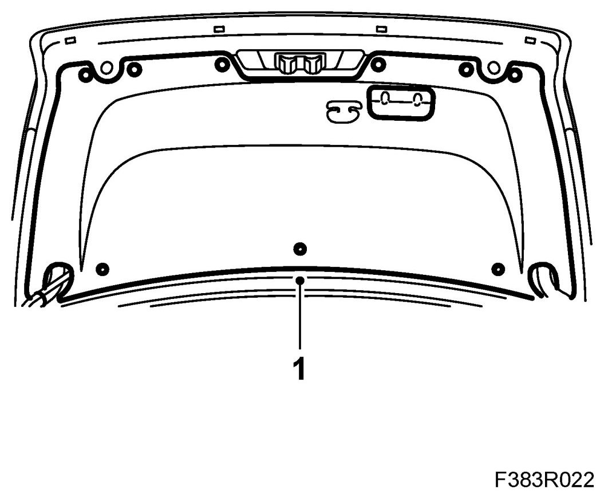
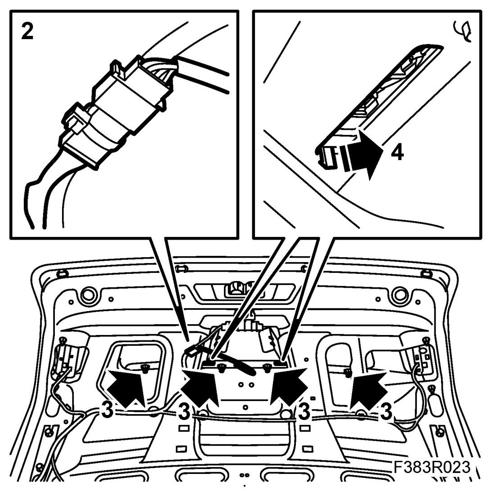
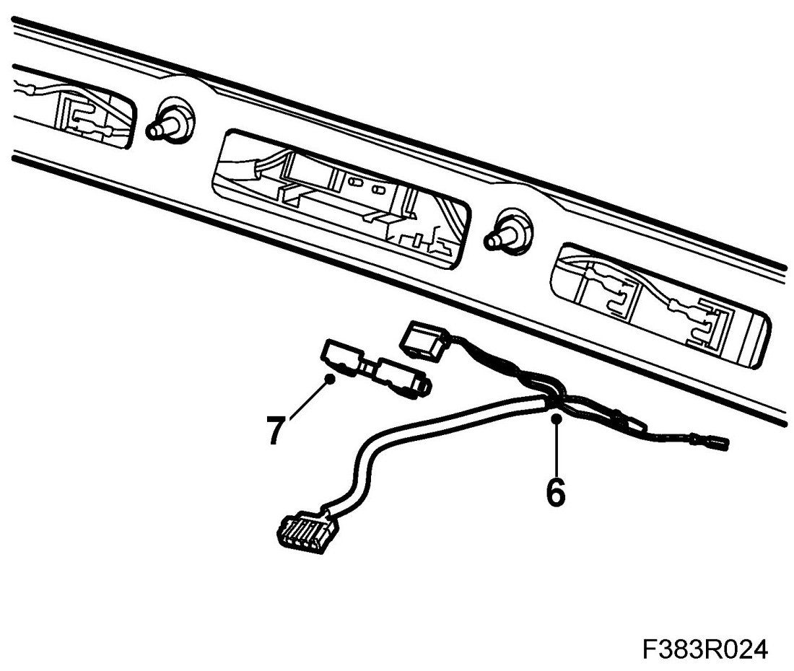
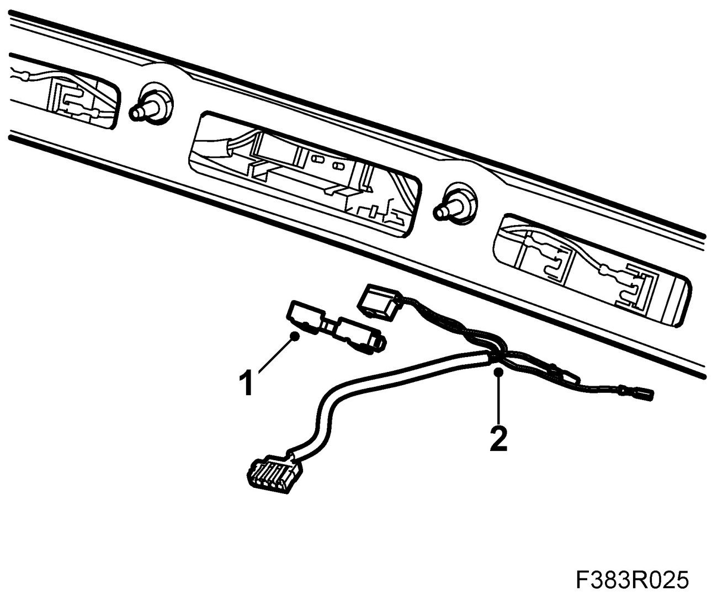
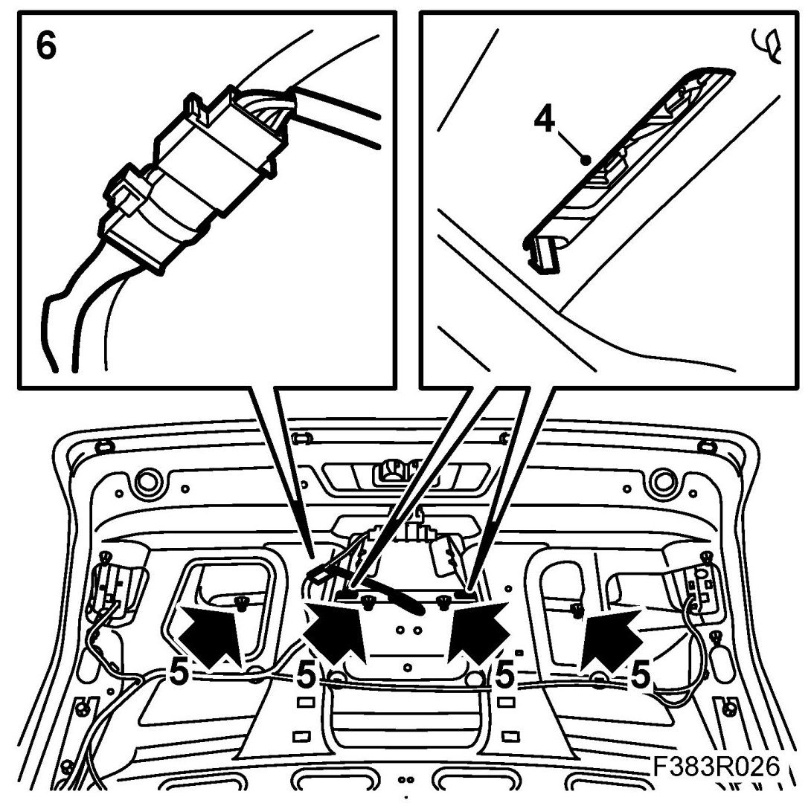
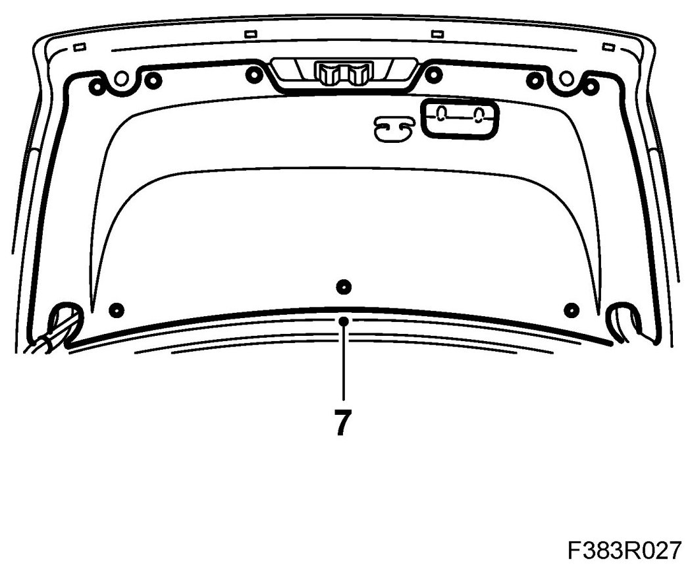

Trunk/Liftgate Sensor/Switch (For Alarm): Service and Repair
Microswitch, Bootlid/Tailgate
Removing
1. Remove the bootlid trim.

2. Unplug the microswitch connector.

3. Remove the 4 nuts securing the moulding to the bootlid.
4. Press in the clips securing the moulding. Pull out the moulding.
5. Remove the catch securing the microswitch using a screwdriver in the edge of the catch.
6. Unplug the flat pin connector to the microswitch.

7. Remove the microswitch.
Fitting
1. Fit the microswitch.

2. Plug in the flat pin connector. Use a screwdriver to lift up the seal.
3. Fit the catch securing the microswitch. Make sure it engages properly.
4. Fit the moulding to the bootlid.

5. Fit the nuts securing the moulding to the bootlid.
6. Plug in the microswitch connector.
7. Fit the bootlid trim.

8. Functional check